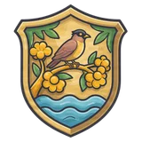
Disponível no lançamento
Terra do Sabiá
Rios largos, cerrado de ipês e chapadas acima das nuvens: onde os Viajantes acordam.
O almanaque de Perdidos
Mundos, títulos, criaturas e histórias para consultar durante a viagem.
Perdidos é um MMORPG de fantasia medieval. Você é um Viajante: alguém do nosso mundo que desperta numa terra linda e perigosa, onde os contos e as lendas de cada povo são verdade.
Cada região do mundo nasce das lendas, da arquitetura e da música de um país: quests, monstros, armas e chefes vêm dali.
Ninguém te dá uma classe. Você aprende cada técnica com um Mestre, por quests, e vira especialista ou generalista.
Personagens e monstros em pixel art sobre mapas em 3D, câmera que gira e clique para mover e atacar.
Cidades compartilhadas, grupos com instância própria e resgate entre amigos. O que se compra muda só a aparência, nunca o poder.
Você foi arrancado do seu mundo e caiu num lugar lindo e perigoso. Ninguém te dá uma classe: você se torna aquilo que tiver coragem de aprender.
O mundo dos Viajantes é feito de reinos que parecem ecos do nosso planeta. Dez regiões estão planejadas. A Terra do Sabiá é a primeira região jogável, agora com três áreas de caça conectadas em protótipo; as outras nove chegam em atualizações.
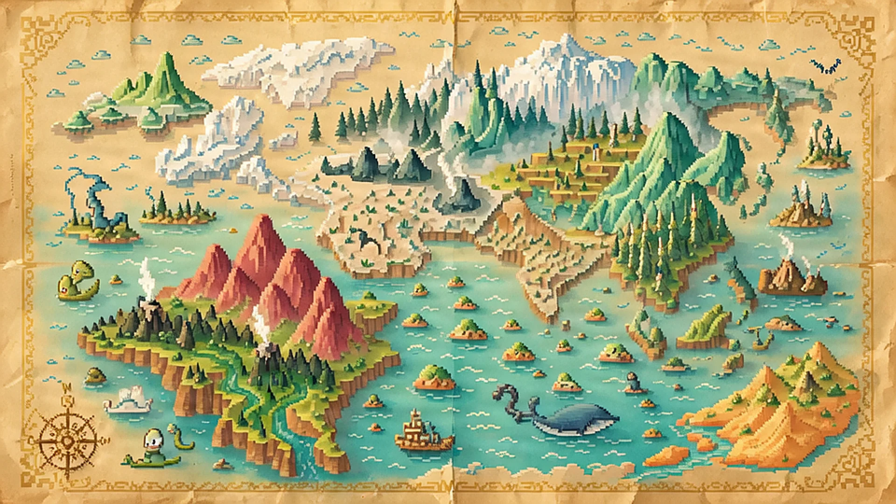

Rios largos, cerrado de ipês e chapadas acima das nuvens: onde os Viajantes acordam.
Muralhas caiadas, azulejos e fontes onde mouras encantadas fiam ouro ao luar.
Colunas brancas, teatros voltados para o mar e ilhas cheias de monstros de lenda.
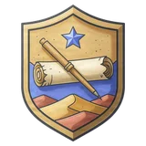
Dunas douradas, um rio verde e as pirâmides que o povo do rio ergueu pedra por pedra.
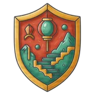
Terraços de arroz, bambuzais que cantam e montanhas verdes onde a fera do Ano-Novo dorme.
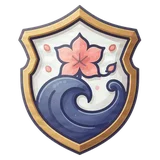
Ilhas vulcânicas de cerejeiras, pontes vermelhas e picos onde os tengu desafiam os ousados.
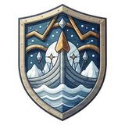
Geleiras, auroras e salões de madeira onde as sagas são cantadas junto ao fogo.
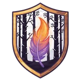
Bosques de bétulas, isbás entalhadas e contos de feiticeiros imortais e pássaros de fogo.
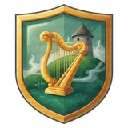
Ilhas de colinas verdes e névoa, onde harpas choram e cavalos d'água convidam a montar.
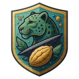
Selva fumegante, vulcões e cidades de pirâmides escalonadas erguidas pelo povo da selva.
Rios largos, cerrado de ipês e chapadas acima das nuvens. É aqui que os Viajantes acordam, sob o ipê amarelo gigante e o cristal azul da praça, e dão os primeiros passos pelo folclore do Brasil.
Saia da cidade, conheça os monstros mais fracos e avance para áreas mais perigosas. Cada passagem tem caminho de volta. Os níveis são uma recomendação: você escolhe quando se arriscar.
Prepare os equipamentos e siga pelos portões para os Campos.
Redemoinhos, vaga-lumes e tatus de nível 2–7. Primeira área de caça, sem bosses.
Formas médias de nível 6–10. Inimigos mais resistentes e agressivos, ainda sem bosses.
Monstros de nível 12–16 e chefes de nível 20–22. O Tatu-Montanha guarda seu covil com uma escolta.
À noite, o perigo aumenta. Os chefes da Chapada assumem formas atrozes de nível 26–28. As duas primeiras áreas continuam sem bosses.
As conexões, os monstros e os covis já funcionam no protótipo. Cenários, missões e balanceamento continuam em desenvolvimento. O Campo de Treino é separado dessa rota; sua saída exige o primeiro título.
Relatos de gado ferido levam o Viajante à história de Eustáquio Sete-Estrelas, herdeiro de uma maldição antiga. Pistas, fases da lua e escolhas apontam para três desfechos diferentes.
O Viajante derrota a criatura. Eustáquio não sobrevive, e a vila sente o peso da escolha.
Trilha de despedida de Eustáquio
Na versão beta, encontre a encruzilhada e conclua a benzedura com Marcelina. Ingredientes e imobilização da fera ainda estão em produção.
Observe três noites de lua cheia, deixe a oferenda e retorne ao Curupira. A mini-quest e a defesa contra caçadores ainda estão em produção.
A investigação, as três escolhas e as versões beta dos desfechos estão no protótipo. A Rota A inclui o chefe e uma trilha triste original; sprites de NPC, itens do ritual e consequências no mundo ainda serão refinados.
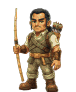
Arqueiro veterano. É ele quem ensina a usar o arco e os títulos Flecha do Cerrado, Tocaia do Brejo e Gavião-Real.
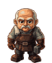
Conta como forjou um facão no fogo dos vaga-lumes. Ensina o título Brasa no Facão a quem sabe lutar com o facão e usar magia.
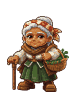
Raizeira que cura com ervas. Conta como o cerrado brota de novo depois do fogo e ensina o título de suporte Raiz do Cerrado.
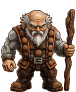
Conta a história do jabuti que caiu da festa no céu e ficou mais forte. Ensina o título de tanque Casco de Jabuti.
Capturas reais do jogo em desenvolvimento, sem a interface. A arte ainda vai mudar.
O mundo tem dia e noite: 40 minutos de dia e 20 de noite. À noite a luz fica azulada, as fogueiras e o cristal brilham mais, e os chefes viram a forma atroz.
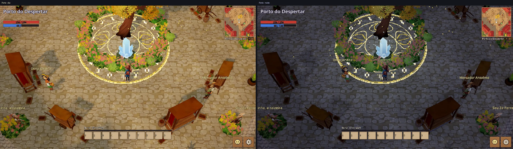
Escolha corpo, pele, cabelo, olhos e brincos. E escolha de onde você veio: a nacionalidade define a roupa com que o seu Viajante chega. Os títulos mudam a roupa depois.
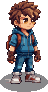
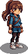
Os títulos mostram o seu estilo de jogo. Você conquista um título ao aprender as skills dele com um Mestre. Cada título tem 5 skills próprias e, depois, abre dois ramos. Os nomes vêm das lendas da região. Os títulos de suporte e de tanque são especiais: para conquistar, você precisa ter três títulos e vencer uma quest difícil de um ancião. Veja abaixo os títulos da Terra do Sabiá.
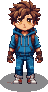
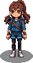
Roupa em produção
Quem acabou de chegar ao mundo. Ainda não tem skills de título: escolha um caminho no Campo de Treino.
Como conquistar: Todo personagem começa assim.
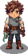
Roupa em produção
Luta corpo a corpo com o facão, a arma típica da região. Veste túnica cinza, cinto largo e bainha.
Como conquistar: Faça a quest do Mestre Jatobá no Campo de Treino.
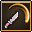
Golpe Firme150% do ATQ num alvo.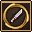
Giro de AçoGiro de 3 células em volta.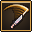
RoçadaLeque de 90° que empurra.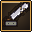
Amolar o Facão+20% ATQ e +10% crítico por 12 s.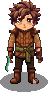
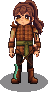
Roupa em produção
Aguenta golpes e devolve o dano, firme como a madeira da aroeira. Veste gibão acolchoado cor de casca.
Como conquistar: Tenha Facão Firme e aprenda Postura de Ferro.
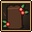
Resposta da AroeiraAnula o próximo golpe e devolve 200% ATQ.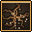
Raiz PresaPrende quem está em volta por 2 s.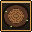
Casca Grossa−30% de dano recebido por 6 s.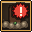
Chamado do TroncoOs monstros em volta atacam você.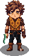
Roupa em produção
Ataca rápido e forte, como a onça que dá o bote. Veste colete ocre com pintas.
Como conquistar: Tenha Facão Firme e aprenda Corte do Horizonte.
Roupa em produção
Usa magia de luz, fogo e gelo. Veste manto índigo com pingentes que brilham.
Como conquistar: Faça a quest da Mestra Candeia no Campo de Treino.
Roupa em produção
Protege o grupo com escudos de cristal. Veste sobretudo claro de gola alta.
Como conquistar: Tenha Luz de Vaga-lume e aprenda Barreira Arcana.
Roupa em produção
Causa muito dano de fogo, de longe. Veste manto azul-noite com a barra em chamas.
Como conquistar: Tenha Luz de Vaga-lume e aprenda Queda Estelar.
Roupa em produção
Luta de longe com o arco de taquara. Veste gibão de couro cru e aljava nas costas.
Como conquistar: Aprenda Tiro Rasante, Flecha Dupla e Arco Tenso com o Mestre Taquari.
Roupa em produção
Se esconde no mato e ataca de surpresa. Veste capa de folhas e barro.
Como conquistar: Tenha Flecha do Cerrado e aprenda Pele de Barro.
Roupa em produção
Acerta tiros certeiros de muito longe. Veste casaco claro com ombreira de penas.
Como conquistar: Tenha Flecha do Cerrado e aprenda Olho Parado.
Roupa em produção
Junta facão e magia: cada golpe solta faíscas. Veste casaco carvão com meia capa vermelha.
Como conquistar: Tenha Facão Firme e Luz de Vaga-lume. Depois vença a quest do Seu Zé Ferreiro.
Roupa em produção
Cuida do grupo: cura, protege e fortalece os aliados. Veste avental de raizeira e cordões de sementes.
Como conquistar: Tenha Luz de Vaga-lume, Guarda do Cristal e Flecha do Cerrado. Depois vença a quest da Vó Aninha.
Roupa em produção
Cura forte, num aliado ou no grupo todo. Veste túnica de palha de buriti.
Como conquistar: Tenha Raiz do Cerrado e aprenda Chá de Folha Larga.
Roupa em produção
Enfraquece, prende e deixa os inimigos lentos. Veste manto escuro com penas de coruja.
Como conquistar: Tenha Raiz do Cerrado e aprenda Assobio Agourento.
Roupa em produção
Chama os monstros para si e aguenta o dano pelo grupo. Veste peitoral com placas de casco.
Como conquistar: Tenha Facão Firme, Tronco de Aroeira e Garra da Onça. Depois vença a quest do Velho Tião.
Roupa em produção
Aguenta muito dano e derruba os inimigos. Veste armadura de couro grosso.
Como conquistar: Tenha Casco de Jabuti e aprenda Couro Grosso.
Roupa em produção
Bate muito forte, mas se defende menos. Veste peles e garras de osso.
Como conquistar: Tenha Casco de Jabuti e aprenda Fúria.
Cada título veste uma roupa própria, que troca assim que o título é exibido. Pele, olhos e cabelo continuam os que você escolheu.
Esqueça cartas e engastes genéricos. Em Perdidos, seus equipamentos possuem Encaixes de Crendice onde você fixa amuletos da tradição popular. Cada amuleto traz uma Condição de Superstição: seu bônus máximo desperta apenas se o jogador mantiver a conduta e os hábitos do sertão em combate.
O poder não é estático: a Figa de Madeira dobra a proteção no desespero de vida baixa; a Guia de Arruda quebra se pisar em lama; o Dente de Onça exige a noite ou a selva densa; e a Moeda Furada protege quem não inicia a provocação.
Nenhum NPC comercializa amuletos. Eles caem exclusivamente como despojos lendários de monstros derrotados sob rituais específicos, ou através de trocas diretas entre jogadores.
Tombar em batalha faz a sorte dos amuletos se esvair e eles ficam Adormecidos. Para restaurar o vigor folclórico ou engastar novos adornos, visite um Altar de Crendice gratuito nos acampamentos e vilarejos.
Equipar 2 ou 3 amuletos de tradições complementares ativa ressonâncias ancestrais: escudos massivos de bênção, sentidos de predador da caça ou bônus místicos de mana elemental.
Exemplos de amuletos já forjados nas lendas e ativos no mundo:
Esculpida em cerne de aroeira para afastar mau-olhado e agouros que rondam as matas.
Erva aromática seca que purifica o ar e fecha o corpo contra fluidos peçonhentos.
O canino afiado da soberana da floresta, cravado na empunhadura do facão ou lâmina.
O amuleto clássico dos andarilhos das trilhas que farejam tesouros escondidos.
Moeda antiga de cobre com um furo no centro, guardada no bolso junto ao peito.
Pequeno saquinho de linho com cristais marinhos brutos costurado no forro da couraça.
Presa retrátil que escorre peçonha residual a cada corte certeiro.
Fragmento reluzente arrancado dos pilares biomecânicos da cidade ancestral.
Máscara dourada usada pelo Soberano de Z, resplandecendo com a luz escaldante da selva profunda.
Trapo manchado encontrado no Vilarejo de Hoer Verde, cujos fios sufocam o desespero.
Gema fóssil extraída das entranhas da Terra Oca, pesada como uma montanha.
+15% de Defesa Geral, 50% de redução no tempo de debuffs e imunidade total a maldições.
+10% de Dano Crítico, +10% de Taxa de Drop adicional e +5% de dano físico.
+15% de Dano Mágico, +5 de Mana recuperada por golpe e +20% de regeneração de MP.
+10% de Roubo de Vida e +10% de velocidade de movimento sob a luz da lua.
21 espécies já andam pelo Campo de Treino. Nos campos de caça do Sabiá, as formas e os níveis mudam conforme a área: normais nos Campos, médias na Mata e variantes mais fortes e bosses na Chapada.
Mais variedade em preparação: 30 espécies adicionais, três por região cultural, já têm modelos normal, boss e atroz preparados — 90 modelos ao todo. Esse novo catálogo ainda não está nos mapas.
Evolui: Rodamoinho Traquinas → Ventania do Gorro Vermelho
Terra do SabiáEvolui: Vaga-lume Candeeiro → Rainha-Lume do Brejo
Terra do SabiáEvolui: Tatu-Rochedo → Tatu-Montanha
Terra do SabiáEvolui: Aranha-Golias Atroz → Tecelã das Sombras
Terra do SabiáEvolui: Sucuri Anciã → Predadora do Sumidouro
Terra do SabiáEvolui: Lobo-Guará Feérico → Guardião do Cerrado
Terra do SabiáEvolui: Tamanduá Gigante → Demolidor de Cupinzeiros
Terra do SabiáEvolui: Gavião-Real Atroz → Senhora dos Ventos
Terra do SabiáEvolui: Serpe Dourada
Reino das MourasEvolui: Trasgo Resmungão
Reino das MourasEvolui: Kasa-obake Centenário
Ilhas do Sol NascenteEvolui: Tanuki Barrigudo
Ilhas do Sol NascenteEvolui: Lindworm do Gelo
Fiordes de GeloEvolui: Troll de Musgo
Fiordes de GeloEvolui: Grifo Jovem
Costa das ColunasEvolui: Quimera Jovem
Costa das ColunasEvolui: Escorpião Rubro
Areias do NiloEvolui: Esfinge Enigmática
Areias do NiloEvolui: Kelpie das Brumas
Brumas VerdesEvolui: Púca Galopante
Brumas VerdesEvolui: Cabana de Pés de Galinha
Estepe de FerroEvolui: Zmey de Duas Cabeças
Estepe de FerroEvolui: Jiangshi Ancião
Império de JadeEvolui: Raposa de Três Caudas
Império de JadeEvolui: Jaguar da Selva
Selvas de ObsidianaEvolui: Lagarto de Obsidiana
Selvas de ObsidianaQuando muitos monstros da mesma espécie caem num mapa, o chefe da espécie aparece no covil. De noite ele vira a forma atroz: mais forte, mais agressivo e com desenho próprio. Os chefes deixam cair itens raros, que as quests dos anciãos pedem.
O tatu gigante vira uma montanha de espinhos roxos à noite.
A rainha dos vaga-lumes ganha asas rasgadas, coroa de espinhos e fogos-fátuos.
O redemoinho vira uma tempestade roxa com raios e um capuz de chifres.
Inspiradas na fauna real brasileira que lidera índices de acidentes e respeito popular. Cada criatura possui 3 variações distintas: Comum, Atroz (noturna/berserk) e Chefe de Covil, desafiando parties com debuffs de necrose, paralisia e hemorragia.
Picada com veneno neurotóxico potente que drena vigor e paralisa temporariamente a regeneração de mana.
Ergue as patas dianteiras e persegue o jogador velozmente. Seu veneno causa dor aguda e retarda o tempo de recarga das skills.
Camuflada em frestas e tocas secas. Inocula toxina que causa necrose: dano contínuo (DoT) que reduz a armadura a cada segundo.
A Jararaca ataca camuflada nas folhas caídas, enquanto a Cascavel avisa com o chocalho antes de desferir um golpe que destrói escudos.
A Surucucu habita as matas úmidas e densas com bote de longo alcance; a Coral-Verdadeira aplica paralisia muscular respiratória.
Agrupada em troncos de árvores. Seus pelos provocam sangramento severo que se acumula caso o jogador utilize ataques físicos descuidados.
Ao mexer em colmeias naturais, o enxame cobre a visão do jogador, aplicando redução severa de precisão e lentidão.
Rápido e quase invisível em áreas alagadas. Transmite febre debilitante que reduz atributos físicos e velocidade em 25% por 30s.
Clique no chão para andar e no inimigo para atacar. No começo você aprende skills de lâmina e de magia. Com os títulos, chegam o arco, o suporte, o tanque e a lâmina com magia. Cada skill é ensinada numa quest, por um Mestre ou por um ancião. As imagens abaixo são capturas dos efeitos no jogo.
Combate físico corpo a corpo.
Um golpe pesado de lâmina num alvo corpo a corpo: 150% do ATQ (+12% por nível).
Avança até o alvo (até 8 un.), causa 120% do ATQ e atordoa por 0,8 s (+8% ATQ e +0,05 s por nível).
Gira a lâmina e acerta todos ao redor (raio 3): 110% do ATQ (+10% por nível).
+40% de DEF por 10 s, andando 20% mais devagar (+4% DEF e +0,5 s por nível).
Após 0,6 s de preparo, um corte em linha reta (12 x 2 un.): 320% do ATQ (+25% por nível).
Golpe de facão em leque à frente (3 un., 90°): 130% do ATQ e empurra os inimigos 2 células.
Magia elemental à distância.
Lança uma faísca num alvo a até 12 un. (0,4 s de conjuração): 130% do ATQM (+10% por nível).
Sopro gelado em cone (6 un., 60°): 100% do ATQM e 35% mais lento por 3 s (+8% ATQM por nível).
Acende o chão (raio 3, até 10 un.): 40% do ATQM por segundo durante 5 s (+4% por nível).
Escudo em você ou num aliado (até 8 un.) que absorve 50 + 1,5 × ATQM por 8 s (+10% por nível).
Após 1,2 s de conjuração e 1 s de aviso no chão, uma estrela cai (raio 4, até 12 un.): 380% do ATQM (+30% por nível).
Uma chama azul acompanha você e dispara no alvo (até 10 un.): 110% do ATQM.
Dez espaços, nas teclas 1 a 0. Skills de alvo usam o alvo atual; skills de área pedem um clique no chão, com a área desenhada antes.
Nenhuma skill sai de um menu. Você fala com um Mestre, cumpre a quest e passa pela provação. Algumas skills só são ensinadas a quem tem o título certo.
A cada nível você ganha 3 pontos para distribuir conforme a sua build.
| FOR | Força. Dano físico corpo a corpo (facões, espadas, machados) e impacto. |
|---|---|
| DES | Destreza. Dano com arcos e armas de projéteis, esquiva e precisão. (Arcos exigem munição equipada na mão secundária/slot de escudo!) |
| INT | Inteligência. Dano de magias arcanas elementais e expansão do SP (Mana máximo). |
| SAB | Sabedoria / Espírito. Dano sagrado, potência de curas, bênçãos (buffs), maldições (debuffs) e regeneração de mana. |
| VIT | Vitalidade. Vida máxima (HP), defesa física e resistência a golpes pesados. |
| SOR | Sorte. Taxa de acerto crítico, probabilidade de drops raros e criaturas anômalas. |
Jogabilidade fluida e responsiva para telas sensíveis ao toque, inspirada nas melhores mecânicas de MMORPGs modernos:
As 5 skills de cada título, com a roupa e como conquistar, estão na seção Títulos.
Cada região tem trilha própria, tocada com instrumentos do seu povo: viola caipira, pífano e zabumba no Porto do Despertar; koto e shakuhachi nas Ilhas do Sol Nascente; harpa celta nas Brumas Verdes.
Noite de lua, um mundo distante chamando.
Fim de tarde na cidade do rio, com viola caipira e pífano.
Lanternas acesas, koto e shakuhachi.
O jogo está em desenvolvimento, com versões de teste para Windows, Linux e Android. Ainda não há data de lançamento.
Servidor com instâncias e múltiplos jogadores, movimento por células em 8 direções, Porto do Despertar e Campo de Treino renovado com o Instrutor Bento, Altares de Crendice, criação de personagem, 21 espécies de monstros e os 10 primeiros títulos com suas árvores de skills.
Porto → Campos do Sabiá → Mata Encantada → Chapada do Céu Partido. Três áreas de caça em protótipo, portais de ida e volta, monstros por faixa de nível e bosses na área avançada. Agora: melhorar os cenários e ajustar a experiência de caça.
A cinemática da travessia e a área de tutorial: comandos, itens, combate básico e o primeiro monstro com os 3 estágios de evolução.
Contas, grupos com instância própria, chat e progresso salvo.
Expandir e dar acabamento aos campos de caça, criar missões para cada área e abrir a arena. As outras nove regiões terão suas próprias rotas, biomas e criaturas.
Do nível 1 ao 25 aprendendo skills só por quests, com os Mestres e seus títulos.
O chefe Boitatá, servidores e muitos ajustes para receber os primeiros testadores.
A lista de espera é o caminho para participar. O celular vem depois do playtest.
Grandes marcos temáticos planejados para o universo de Perdidos, trazendo novas mecânicas de masmorra, biomas misteriosos e chefes de covil:
Pirâmides colossais no coração da floresta unindo arquitetura pré-colombiana perdida com engrenagens rúnicas brilhantes.
Dossel vegetal impenetrável onde a luz não toca o chão, recheado de ouro amaldiçoado e caçadores que se fundem às sombras.
Um vilarejo fantasma engolido pela bruma cinzenta com o aviso macabro gravado no portal: "Não há salvação".
Galerias subterrâneas titânicas sob a crosta do mundo, com rios subterrâneos e minerais bioluminescentes vibrando em frequências abissais.
O jogo está em desenvolvimento. Conheça as plataformas e os arquivos de teste disponíveis.
Como jogar Entrar na lista de espera